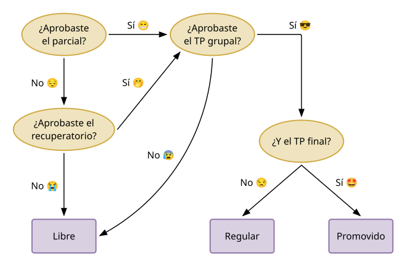
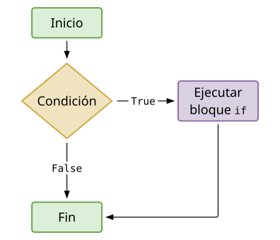
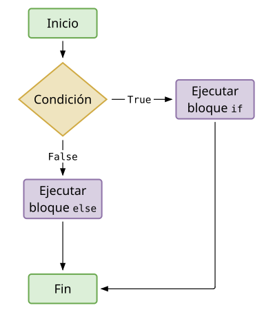

3 - Ejecución condicional
Introducción
Las computadoras son muy buenas para muchísimas cosas. En particular:
- Determinar automáticamente que secciones de un programa se debe ejecutar.
- Realizar tareas repetitivas.
El primer punto se refiere a la ejecución condicional de código y el segundo a la ejecución repetitiva de código.
Estos dos puntos pueden ser vistos de manera general como control de flujo del código. Y En este apunte hablamos de la ejecución condicional de código.

Estructura if
La estructura condicional if utiliza la keyword if para evaluar una condición y ejecutar un bloque de código en base al resultado de esta evaluación. Veamos dos ejemplos:
condicion = True
if condicion:
print("Se ejecuta el bloque if")Se ejecuta el bloque ifcondicion = False
if condicion:
print("Se ejecuta el bloque if")En el primer caso, condicion es True, se ejecuta el cuerpo del bloque if y se observa el mensaje Se ejecuta el bloque if. Por el contrario, en el segundo condicion es False y no se observa ningún mensaje, ya que no se ejecuta el cuerpo del bloque if.
Los ejemplos anteriores utilizan una variable que es directamente True o False. Sin embargo, en la gran mayoría de los casos, se utiliza una expresión que al evaluarse genera valor booleano. Por ejemplo:
nota = 8
if nota >= 6:
print("¡Aprobado!")¡Aprobado!O también:
nota = 3
if nota >= 6:
print("¡Aprobado!")¿Cómo nos damos cuenta qué código está incluido dentro del bloque if? Veamos otros ejemplos:
edad = 21
if edad >= 17:
print("Puede sacar carnet de conducir")
print("Diríjase al departamento de tránsito más cercano")
print("Siempre se muestra este mensaje")Puede sacar carnet de conducir
Diríjase al departamento de tránsito más cercano
Siempre se muestra este mensajeedad = 16
if edad >= 17:
print("Puede sacar carnet de conducir")
print("Diríjase al departamento de tránsito más cercano")
print("Siempre se muestra este mensaje")Siempre se muestra este mensajeMientras que el primer programa muestra tres líneas de texto, ya que se ejecuta el bloque if, el segundo muestra solamente el mensaje del último print(). A diferencia de los dos primeros, el último print() no está incluido en el bloque if.
Así, observamos que el fin de la indentación indica el fin del bloque de código, al igual que cuando se define una función.
De manera general, una estructura condicional if se programa utilizando la siguiente estructura:
Por ejemplo:
La estructura condicional if se puede representar con el siguiente diagrama:

Estructura if - else
Vimos que el bloque if permite ejecutar un bloque de código solamente cuando una condición es verdadera.
También es posible definir un bloque de código para ejecutar cuando la condición es True y otro bloque distinto para ejecutar cuando la condición es False. Para eso, utilizamos la estructura if-else.
Veamos un ejemplo:
edad = 21
if edad >= 16:
print("Tenés la edad suficiente para votar")
else:
print("Lo siento, aún no tenés la edad suficiente para votar")Tenés la edad suficiente para votaredad = 13
if edad >= 16:
print("Tenés la edad suficiente para votar")
else:
print("Lo siento, aún no tenés la edad suficiente para votar")Lo siento, aún no tenés la edad suficiente para votarEn el primer caso, edad >= 16 es True, entonces se ejecuta el cuerpo del bloque if. En el segundo caso, edad >= 16 es False, entonces se ejecuta el cuerpo del bloque else.
En una estructura if-else, siempre se ejecuta uno de los dos bloques: el bloque if si la condición es verdadera, o el bloque else si la condición es falsa.
Al igual que con el bloque if, cualquier parte del código que se escriba luego del bloque if-else es ejecutada sin importar el valor de las condiciones.
Veamos otro ejemplo donde evaluamos si un número es par o impar.
valor = 10
print(valor)10if valor % 2 == 0:
mensaje = "Es par"
else:
mensaje = "Es impar"
print(mensaje)Es parEn este caso, print(mensaje) se ejecuta siempre. Lo que varía es el valor de la variable mensaje, que depende de si el número es par o impar.
De manera general, una estructura condicional if-else se programa utilizando la siguiente plantilla:
Por ejemplo:
La estructura condicional if-else se puede representar con el siguiente diagrama:

Estructura if-elif-else
Es muy probable que tengamos situaciones donde necesitemos considerar más de dos escenarios posibles. Para esto, Python ofrece los bloques if-elif-else.
Este tipo de programa considera varias condiciones y las evalúa de a una a la vez hasta que alguna es verdadera. Luego se ejecuta solamente el bloque de código que corresponde a la primer condición verdadera.
Supongamos que viene un parque de diversiones a Rosario y tiene los siguientes precios para la entrada:
- Menores de 4 años, gratis.
- Personas entre 4 y 18 años, $3000.
- Personas de 18 o mas años, $5000.
edad = 3
if edad < 4:
print("El costo de entrada para vos es de $0.")
elif edad < 18:
print("El costo de entrada para vos es de $3000.")
else:
print("El costo de entrada para vos es de $5000.")El costo de entrada para vos es de $0.En este caso, la primera condición es verdadera y por eso se ejecuta solamente el primer bloque. Python no evalúa la condición del elif ni ejecuta el bloque else.
De manera general, una estructura condicional if-elif-else se programa utilizando la siguiente plantilla:
Veamos ahora un ejemplo un poco más real que refleja las condiciones de aprobación de la materia. Supongamos que tenemos las notas del parcial, del trabajo práctico grupal y del trabajo práctico individual.
parcial = 8
tp_grupal = 7
tp_individual = 5
if parcial < 6 or tp_grupal < 6:
condicion = "Libre"
elif tp_individual >= 6:
condicion = "Promovido"
else:
condicion = "Regular"
print(condicion)RegularLa primera condición combina dos comparaciones con or: si no se aprobó el parcial o no se aprobó el trabajo práctico grupal, la condición es Libre. Si esa condición es falsa, Python evalúa la expresión en elif para determinar si corresponde la promoción. Finalmente, el bloque else contempla el caso restante: parcial y trabajo práctico grupal aprobados, pero sin promoción.
Podemos recorrer este ejemplo paso a paso:
Finalmente, la estructura condicional if-elif-else se puede representar con el siguiente diagrama:
Estructura de múltiples elif
Hasta ahora utilizamos un único bloque elif, pero podemos usar tantos como sea necesario.
Por ejemplo, si el parque de diversiones decide realizar un descuento para adultos mayores, dejando el precio en $3500, podriamos agregar otro bloque elif que represente la evaluación de esta condición.
edad = 68
if edad < 4:
precio = 0
elif edad < 18:
precio = 3000
elif edad < 65:
precio = 5000
else:
precio = 3500
print(f"El precio de entrada para vos es de ${precio}.")El precio de entrada para vos es de $3500.Omitir el bloque else
No hay ninguna regla que nos obligue a terminar un bloque de if-elif con un bloque else.
Utilizar el bloque else a veces es lo correcto, pero otras veces puede ser mejor poner una condición explícita en un último elif que contemple solamente la condición que realmente nos interesa.
edad = 10
if edad < 4:
precio = 0
elif edad < 18:
precio = 3000
elif edad < 65:
precio = 5000
elif edad >= 65:
precio = 3500
print(f"El precio de entrada para vos es de ${precio}.")El precio de entrada para vos es de $3000.El bloque elif que agregamos indica que el precio será de $3500 cuando la edad de la persona sea mayor o igual a 65 años. Esta condición es más explícita y fácil de entender que el bloque else que usábamos antes.
Sin embargo, todavía hay un problema: el programa sigue funcionando incluso si se ingresan edades fuera de un rango razonable. A continuación se muestra una versión más completa:
edad = 125
if edad < 0:
print("¡Error!")
precio = None
elif edad < 4:
precio = 0
elif edad < 18:
precio = 3000
elif edad < 65:
precio = 5000
elif edad >= 65 and edad <= 120:
precio = 3500
else:
print("¡Error!")
precio = None¡Error!print(f"El precio de entrada para vos es ${precio}.")El precio de entrada para vos es $None.El diagrama y el código para el caso solo con elif se ven de la siguiente manera: